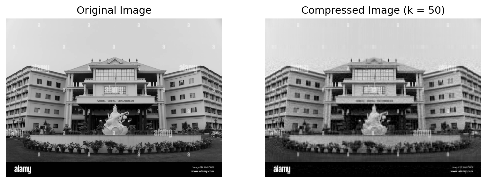

Abstract:
This study investigates the application of Singular Value Decomposition (SVD) as an effective mathematical framework for various image processing tasks. SVD offers a unique decomposition approach, making it suitable for applications like image compression, denoising, and watermarking by enabling optimal rank approximations and noise separation. The robustness of SVD in handling large matrices allows it to capture key image characteristics, preserving essential features while reducing data requirements. By leveraging SVD’s ability to separate data into dominant and subdominant subspaces, this research demonstrates enhanced image compression, effective noise reduction, and secure watermark embedding. Experimental results validate SVD’s utility in optimizing image storage, clarity, and fidelity, with potential implications for advancing adaptive image processing techniques.
Funding Agency
The
quarto-ieee template is freely available under the MIT license on github: https://github.com/dfolio/quarto-ieee.
1 Introduction
Image processing has become integral to numerous fields, from medical imaging to digital forensics, where large volumes of visual data demand efficient storage, transmission, and quality retention techniques. Among the many mathematical transformations applied to images, Singular Value Decomposition (SVD) has emerged as a particularly valuable tool. SVD is a matrix factorization technique that represents a given matrix as a product of three matrices: \(U\), \(\Sigma\), and \(V^T\). This decomposition is significant in image processing because it maximizes the energy contained in the largest singular values, enabling the creation of compact, high-quality approximations of the original data. Unlike other transformations, SVD does not require a specific image size or type, making it highly adaptable and robust for various image processing tasks.
The primary strength of SVD lies in its capacity to separate image data into meaningful components. For instance, in an image represented by SVD, the larger singular values and their corresponding vectors encode most of the structural content, while smaller singular values can often represent noise. This property is beneficial for applications requiring data reduction, such as image compression and denoising, where maintaining the primary structure while reducing extraneous information is essential. Additionally, SVD’s stable mathematical foundation and adaptability have made it increasingly popular in other specialized applications, including watermarking for digital forensics and security.
In image compression, SVD enables reduced data storage by approximating the image using fewer singular values, providing a balance between quality and compression ratio. This application is critical in fields where storage and bandwidth are constrained. Similarly, in denoising, SVD can isolate noise by exploiting the decomposition’s ability to differentiate between dominant and subdominant subspaces, allowing effective noise suppression without significantly affecting the image’s core structure. Furthermore, SVD is also used in watermarking, where slight modifications to specific singular values embed unique patterns within images, enhancing security and ensuring authenticity.
Despite these advantages, SVD in image processing remains an area with unexplored potential. This paper explores these established applications while addressing underutilized SVD properties to uncover new applications. By investigating SVD’s adaptive properties in compressing and filtering images, as well as its potential for encoding data securely, this work contributes to a growing body of research on SVD-based image processing and presents promising directions for further study.
2 SVD Application in Image Processing
Singular Value Decomposition (SVD) has several important applications in image processing. The SVD can be used to reduce the noise or compress matrix data by eliminating small singular values or higher ranks [1]. This allows for the size of stored images to be reduced [2]. Additionally, the SVD has properties that make it useful for various image processing tasks, such as enhancing image quality and filtering out noise. The main theorem of SVD is reviewed in the search results, and numerical experiments have been conducted to illustrate its applications in image processing.
2.1 Image Compression
Image compression represents a vital technique to reduce the data needed to represent an image. This is crucial for achieving efficient storage and transmission across various applications, including digital photography, video streaming, and web graphics. Compression methods are primarily categorized into two distinct types: lossy and lossless.
Lossy compression diminishes file size by irreversibly eliminating certain image data, which can result in a degradation of image quality, as observed in JPEG formats. This method is frequently employed when the reduction of file size is of paramount importance, and any resultant loss in quality is considered acceptable.
Conversely, lossless compression techniques allow for the compression of images without any loss of data, facilitating the exact reconstruction of the original image, as exemplified by PNG formats. This approach is beneficial when preserving image quality is essential and minimizing file size is of lesser importance.
The decision to use either lossy or lossless compression hinges on the specific needs of the application, balancing the trade-offs between file size and image quality.
SVD-based image compression functions by decomposing the image matrix into three components and subsequently approximating the original matrix with only the most significant singular values and vectors. This process results in a compact image representation while preserving the essential information.
Mathematically, given an image represented as a matrix \(A\) with dimensions \(m \times n\), the Singular Value Decomposition (SVD) decomposes \(A\) into three matrices: \(U\), \(\Sigma\), and \(V^T\). Here, \(U\) is an \(m \times m\) orthogonal matrix containing the left singular vectors, \(\Sigma\) is an \(m \times n\) diagonal matrix containing singular values, and \(V^T\) is the transpose of an \(n \times n\) orthogonal matrix containing the right singular vectors. To compress the image, we keep only the top \(k\) singular values (where \(k\) is significantly smaller than both \(m\) and \(n\)). The compressed image can be reconstructed as
\[ A_k = U_k \Sigma_k V_k^T, \]
where \(U_k\) contains the first \(k\) columns of \(U\), \(\Sigma_k\) is a \(k \times k\) diagonal matrix of the top \(k\) singular values, and \(V_k^T\) consists of the first \(k\) rows of \(V^T\).
To assess the quality of the original and compressed images, various metrics can be employed. Commonly used measures are discussion in this section.
2.1.1 Image Quality Assessment Metrics
To evaluate the quality of compressed images relative to their original versions, several standardized metrics are commonly employed. These metrics provide quantitative comparisons across aspects such as pixel-level error, signal fidelity, structural similarity, and compression efficiency. The following are the key metrics used in image quality assessment:
2.1.1.1 Mean Squared Error (MSE)
The Mean Squared Error quantifies the average squared difference between corresponding pixel values of the original and compressed images. Lower values indicate higher fidelity to the original. Mathematically, MSE is defined as: \[ \text{MSE} = \frac{1}{m \cdot n} \sum_{i=1}^{m} \sum_{j=1}^{n} (A(i,j) - A_k(i,j))^2 \] where \(A(i,j)\) and \(A_k(i,j)\) denote the pixel values of the original and compressed images, respectively, and \(m \times n\) represents the image dimensions.
2.1.1.2 Peak Signal-to-Noise Ratio (PSNR)
PSNR is a widely used metric that compares the maximum possible signal value to the noise level introduced by compression. It is computed as: \[ \text{PSNR} = 10 \cdot \log_{10} \left( \frac{\text{MAX}^2}{\text{MSE}} \right) \] where \(\text{MAX}\) represents the maximum pixel value (e.g., 255 for 8-bit images). Higher PSNR values indicate better image quality, as they correspond to lower MSE values.
2.1.1.3 Structural Similarity Index (SSIM)
The Structural Similarity Index assesses perceptual similarity by analyzing luminance, contrast, and structural information between the original and compressed images. The SSIM index, ranging from -1 to 1, is calculated as: \[ \text{SSIM}(A, A_k) = \frac{(2 \mu_A \mu_{A_k} + C_1)(2 \sigma_{AA_k} + C_2)}{(\mu_A^2 + \mu_{A_k}^2 + C_1)(\sigma_A^2 + \sigma_{A_k}^2 + C_2)} \] where \(\mu\), \(\sigma\), and \(\sigma_{AA_k}\) denote means, variances, and covariances of \(A\) and \(A_k\), with constants \(C_1\) and \(C_2\) to prevent division by zero. Higher SSIM values suggest higher structural fidelity.
2.1.1.4 Compression Ratio (CR)
Compression Ratio quantifies the efficiency of compression, calculated as the ratio of the original image size to the compressed size: \[ \text{Compression Ratio} = \frac{\text{Size of Original Image}}{\text{Size of Compressed Image}} \] A higher compression ratio indicates a greater reduction in file size, which is desirable in applications requiring efficient storage or transmission.
2.1.1.5 Normalized Cross-Correlation (NCC)
Normalized Cross-Correlation measures the similarity in pixel intensity patterns between the original and compressed images. NCC is calculated as: \[ \text{NCC} = \frac{\sum (A \cdot A_k)}{\sqrt{\sum A^2 \cdot \sum A_k^2}} \] Values closer to 1 indicate a stronger correlation, signifying greater retention of the original image characteristics in the compressed version.
These metrics collectively provide a comprehensive assessment of image quality by addressing both objective and perceptual aspects of compression, making them suitable for a wide range of applications in image processing and computer vision.
| Metric | Value |
|---|---|
| Mean Squared Error (MSE) | 110.2853 |
| Peak Signal-to-Noise Ratio (PSNR) | 27.7056 dB |
| Structural Similarity Index (SSIM) | 0.8116 |
| Compression Ratio (CR) | 10.78 |
| Normalized Cross-Correlation (NCC) | 0.9976 |
| Original Image Size | 9709.38 KB |
| Compressed Image Size | 900.78 KB |
| Size Reduction | 8808.59 KB |
The quality assessment metrics indicate effective compression with minimal loss of fidelity in the image. A Mean Squared Error (MSE) of 110.29 suggests that the average pixel intensity differences between the original and compressed images are small. The Peak Signal-to-Noise Ratio (PSNR) of 27.71 dB, typically above the 30 dB threshold for high-quality compression, indicates moderate quality but acceptable for many applications.
The Structural Similarity Index (SSIM) of 0.8116, close to 1, suggests that the perceptual similarity between the images remains high. The Compression Ratio (CR) of 10.78 shows significant size reduction, and the Normalized Cross-Correlation (NCC) of 0.9976 demonstrates a high correlation between the original and compressed images, supporting strong structural consistency.
The compressed image achieves substantial size reduction (from 9709.38 KB to 900.78 KB) with reasonable preservation of visual quality, making it suitable for applications prioritizing storage efficiency without heavily compromising visual fidelity.
The table below presents a comparison of compression quality metrics for three different image compression methods: Singular Value Decomposition (SVD), Discrete Cosine Transform (DCT), and Wavelet Transform. The metrics included are Mean Squared Error (MSE), Peak Signal-to-Noise Ratio (PSNR), Structural Similarity Index (SSIM), Compression Ratio (CR), Normalized Cross-Correlation (NCC), Compressed Size, and Size Reduction. Each metric provides insight into the effectiveness of the compression techniques in terms of image quality and storage efficiency.
| Method | MSE | PSNR (dB) | SSIM | CR | NCC | Compressed Size (KB) |
|---|---|---|---|---|---|---|
| SVD | 282.9933 | 23.6130 | 0.7122 | 6.88 | 0.9938 | 176.33 |
| DCT | 1172.0801 | 17.4412 | 0.5914 | 2.28 | 0.9741 | 531.82 |
| Wavelet | 0.0197 | 65.1859 | 0.9999 | 0.12 | 1.0000 | 9715.31 |
The results demonstrate that Singular Value Decomposition (SVD) offers a superior balance between image quality and compression efficiency compared to Discrete Cosine Transform (DCT) and Wavelet Transform. With a significantly lower Mean Squared Error (MSE) and a Peak Signal-to-Noise Ratio (PSNR) of 23.6130 dB, SVD preserves the original image quality more effectively than DCT (17.4412 dB) and offers practical structural similarity (SSIM) of 0.7122. In contrast, while the Wavelet method achieves excellent PSNR (65.1859 dB) and SSIM (0.9999), its large compressed size (9715.31 KB) renders it impractical for many applications.
In terms of compression efficiency, SVD yields a Compression Ratio (CR) of 6.88 with a manageable compressed size of 176.33 KB, resulting in a significant size reduction of 1037.34 KB. This contrasts sharply with DCT’s lower CR of 2.28 and Wavelet’s CR of 0.12, which implies an increase in size for the latter. Overall, SVD stands out as a robust image compression method, effectively maintaining quality while achieving substantial reductions in storage requirements, making it particularly advantageous for applications prioritizing both quality and efficiency.
2.2 SVD Architecture and Denoising
The Singular Value Decomposition (SVD) architecture provides a powerful framework for analyzing and compressing images. In the context of image decomposition, the singular values (SVs) represent the luminance levels of various layers within the image, while the corresponding singular vectors (SCs) define the geometric characteristics of these layers.
When applied to a high-resolution image, SVD enables the extraction of significant image content through the left singular matrix, capturing the primary structures and features. Conversely, the right singular matrix isolates the noise components, which are typically linked to the smaller singular values found in the diagonal matrix, \(\Sigma\).
Thus, the largest singular values correspond to the most prominent image features, often referred to as eigenimages, while the noise components are associated with the smaller singular values. This decomposition allows for a clear distinction between meaningful image information and noise, facilitating effective compression and analysis. By leveraging SVD, one can efficiently manage and manipulate image data, ensuring that essential visual content is retained while minimizing the impact of noise.

School of Artificial Intelligence, Amrita Vishwa Vidyapeetham, Coimbatore, 18800 India, Unknown affiliation
Use IEEEbiography with figure as option and the author name as the argument followed by the biography text.
[1]
Z. Chen, “Singular value decomposition and its applications in image processing,” Proceedings of the 2018 1st International Conference on Mathematics and Statistics, 2018 [Online]. Available: https://api.semanticscholar.org/CorpusID:53245257
[2]
L. Cao, “Singular value decomposition applied to digital image processing,” Division of Computing Studies, Arizona State University Polytechnic Campus, Mesa, Arizona State University polytechnic Campus, pp. 1–15, 2006.
Author Keywords
- Singular Value Decomposition (SVD),
- Image Processing,
- Image Compression,
- Image Denoising,
- Digital Watermarking,
- Noise Filtering,
- Matrix Factorization,
- Rank Approximation,
- Frobenius Norm,
- Energy Compaction,
- Digital Forensics,
- Signal Processing,
- Adaptive Image Processing,
- Orthogonal Subspaces
Citation
BibTeX citation:
@software{k_s2023,
author = {K S, Siju and K.P, Dr.Soman},
title = {SVD {Based} {Image} {Processing} {Applications}},
pages = {1-3},
date = {2023-06-23},
url = {https://github.com/dfolio/quarto-ieee},
langid = {en},
abstract = {This study investigates the application of Singular Value
Decomposition (SVD) as an effective mathematical framework for
various image processing tasks. SVD offers a unique decomposition
approach, making it suitable for applications like image
compression, denoising, and watermarking by enabling optimal rank
approximations and noise separation. The robustness of SVD in
handling large matrices allows it to capture key image
characteristics, preserving essential features while reducing data
requirements. By leveraging SVD’s ability to separate data into
dominant and subdominant subspaces, this research demonstrates
enhanced image compression, effective noise reduction, and secure
watermark embedding. Experimental results validate SVD’s utility in
optimizing image storage, clarity, and fidelity, with potential
implications for advancing adaptive image processing techniques.}
}
For attribution, please cite this work as:
S.
K S and Dr. S. K.P, “SVD Based Image Processing
Applications,” GitHUB. pp. 1–3, 23-Jun-2023 [Online].
Available: https://github.com/dfolio/quarto-ieee